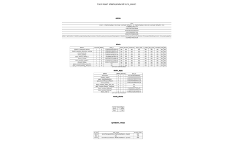

Note
Go to the end to download the full example code.
Export a LLM with InputObserver (with Tiny-LLM)#
The main issue when exporting a LLM is the example on HuggingFace is based on method generate but we only need to export the forward method. Example InputObserver with Transformers Cache gives details on how to guess dummy inputs and dynamic shapes to do so. Let’s see how to simplify that.
Dummy Example#
Let’s use the example provided on arnir0/Tiny-LLM.
import pandas
from transformers import AutoModelForCausalLM, AutoTokenizer
from yobx import doc
from yobx.helpers import string_type
from yobx.helpers.rt_helper import onnx_generate
from yobx.torch import (
register_flattening_functions,
apply_patches_for_model,
to_onnx,
InputObserver,
)
MODEL_NAME = "arnir0/Tiny-LLM"
tokenizer = AutoTokenizer.from_pretrained(MODEL_NAME)
model = AutoModelForCausalLM.from_pretrained(MODEL_NAME)
def generate_text(
prompt,
model,
tokenizer,
max_length=50,
temperature=0.01,
top_k=50,
top_p=0.95,
do_sample=True,
):
inputs = tokenizer(prompt, return_tensors="pt")
input_ids = inputs["input_ids"]
attention_mask = inputs["attention_mask"]
outputs = model.generate(
input_ids=input_ids,
attention_mask=attention_mask,
max_length=max_length,
temperature=temperature,
top_k=top_k,
top_p=top_p,
do_sample=do_sample,
)
generated_text = tokenizer.decode(outputs[0], skip_special_tokens=True)
return generated_text
# Define your prompt
prompt = "Continue: it rains, what should I do?"
generated_text = generate_text(prompt, model, tokenizer)
print("-----------------")
print(generated_text)
print("-----------------")
Loading weights: 0%| | 0/12 [00:00<?, ?it/s]
Loading weights: 100%|██████████| 12/12 [00:00<00:00, 798.55it/s]
-----------------
Continue: it rains, what should I do?
I have a lot of people who are in the world. I have a lot of people who are in the world, and I have a lot of people who are in the world
-----------------
Replace forward method#
We first capture inputs and outputs with an InputObserver.
We also need to registers additional patches for transformers.
Then pytorch knows how to flatten/unflatten inputs.
observer = InputObserver()
with register_flattening_functions(patch_transformers=True), observer(model):
generate_text(prompt, model, tokenizer)
print(f"number of stored inputs: {len(observer.info)}")
number of stored inputs: 3
Exports#
The InputObserver has now enough data to infer arguments and dynamic shapes. We need more than flattening but also patches to export the model. Inferred dynamic shapes looks like:
with register_flattening_functions(patch_transformers=True):
dynamic_shapes = observer.infer_dynamic_shapes(set_batch_dimension_for=True)
kwargs = observer.infer_arguments()
and inferred arguments:
print("dynamic_shapes:", dynamic_shapes)
print("kwargs:", string_type(kwargs, with_shape=True))
dynamic_shapes: {'input_ids': {0: DimHint(DYNAMIC), 1: DimHint(DYNAMIC)}, 'attention_mask': {0: DimHint(DYNAMIC), 1: DimHint(DYNAMIC)}, 'position_ids': {0: DimHint(DYNAMIC), 1: DimHint(DYNAMIC)}, 'past_key_values': [{0: DimHint(DYNAMIC), 2: DimHint(DYNAMIC)}, {0: DimHint(DYNAMIC), 2: DimHint(DYNAMIC)}], 'logits_to_keep': None}
kwargs: dict(input_ids:T7s1x13,attention_mask:T7s1x13,position_ids:T7s1x13,past_key_values:DynamicCache(key_cache=#1[T1s1x1x0x96], value_cache=#1[T1s1x1x0x96]),logits_to_keep:int)
Let’s export.
filenamec = "plot_input_observer_tiny_llm.onnx"
with (
register_flattening_functions(patch_transformers=True),
apply_patches_for_model(patch_torch=True, patch_transformers=True, model=model),
):
to_onnx(
model,
(),
kwargs=observer.infer_arguments(),
dynamic_shapes=observer.infer_dynamic_shapes(set_batch_dimension_for=True),
filename=filenamec,
)
Check discrepancies#
The model is exported into ONNX. We use again the stored inputs and outputs to verify the model produces the same outputs.
data = observer.check_discrepancies(filenamec, progress_bar=True)
print(pandas.DataFrame(data))
0%| | 0/3 [00:00<?, ?it/s]
33%|███▎ | 1/3 [00:01<00:03, 1.88s/it]
100%|██████████| 3/3 [00:01<00:00, 1.58it/s]
abs rel sum n dnan dev >0.1 >0.01 SUCCESS index duration_torch ort_duration n_inputs n_none n_empty inputs outputs_torch outputs_ort
0 0.000012 0.000433 0.064768 34496.0 0 0 0 0 True 0 0.002907 1.869024 5 2 2 dict(input_ids:T7s1x13,attention_mask:T7s1x13,... #3[T1s1x1x32000,T1s1x1x13x96,T1s1x1x13x96] #3[T1s1x1x32000,T1s1x1x13x96,T1s1x1x13x96]
1 0.000010 0.001411 0.046240 34688.0 0 0 0 0 True 1 0.003178 0.001310 5 0 0 dict(input_ids:T7s1x1,attention_mask:T7s1x14,p... #3[T1s1x1x32000,T1s1x1x14x96,T1s1x1x14x96] #3[T1s1x1x32000,T1s1x1x14x96,T1s1x1x14x96]
2 0.000010 0.001841 0.048305 34880.0 0 0 0 0 True 2 0.001887 0.003449 5 0 0 dict(input_ids:T7s1x1,attention_mask:T7s1x15,p... #3[T1s1x1x32000,T1s1x1x15x96,T1s1x1x15x96] #3[T1s1x1x32000,T1s1x1x15x96,T1s1x1x15x96]
Minimal script to export a LLM#
The following lines are a condensed copy with less comments.
# from HuggingFace
print("----------------")
MODEL_NAME = "arnir0/Tiny-LLM"
tokenizer = AutoTokenizer.from_pretrained(MODEL_NAME)
model = AutoModelForCausalLM.from_pretrained(MODEL_NAME)
# from HuggingFace again
prompt = "Continue: it rains, what should I do?"
inputs = tokenizer(prompt, return_tensors="pt")
observer = InputObserver()
with (
register_flattening_functions(patch_transformers=True),
apply_patches_for_model(patch_transformers=True, model=model),
observer(model),
):
outputs = model.generate(
input_ids=inputs["input_ids"],
attention_mask=inputs["attention_mask"],
do_sample=False,
max_new_tokens=10,
)
filename = "plot_input_observer_tiny_llm.2.onnx"
with (
register_flattening_functions(patch_transformers=True),
apply_patches_for_model(patch_torch=True, patch_transformers=True, model=model),
):
to_onnx(
model,
(),
kwargs=observer.infer_arguments(),
filename=filename,
dynamic_shapes=observer.infer_dynamic_shapes(set_batch_dimension_for=True),
)
data = observer.check_discrepancies(filename, progress_bar=True)
print(pandas.DataFrame(data))
----------------
Loading weights: 0%| | 0/12 [00:00<?, ?it/s]
Loading weights: 100%|██████████| 12/12 [00:00<00:00, 1134.98it/s]
0%| | 0/3 [00:00<?, ?it/s]
33%|███▎ | 1/3 [00:00<00:00, 4.32it/s]
100%|██████████| 3/3 [00:00<00:00, 12.25it/s]
abs rel sum n dnan dev >0.1 >0.01 SUCCESS index duration_torch ort_duration n_inputs n_none n_empty inputs outputs_torch outputs_ort
0 0.000012 0.000433 0.064768 34496.0 0 0 0 0 True 0 0.028504 0.226378 5 2 2 dict(input_ids:T7s1x13,attention_mask:T7s1x13,... #3[T1s1x1x32000,T1s1x1x13x96,T1s1x1x13x96] #3[T1s1x1x32000,T1s1x1x13x96,T1s1x1x13x96]
1 0.000010 0.001411 0.046240 34688.0 0 0 0 0 True 1 0.001902 0.002302 5 0 0 dict(input_ids:T7s1x1,attention_mask:T7s1x14,p... #3[T1s1x1x32000,T1s1x1x14x96,T1s1x1x14x96] #3[T1s1x1x32000,T1s1x1x14x96,T1s1x1x14x96]
2 0.000010 0.001841 0.048305 34880.0 0 0 0 0 True 2 0.001987 0.002179 5 0 0 dict(input_ids:T7s1x1,attention_mask:T7s1x15,p... #3[T1s1x1x32000,T1s1x1x15x96,T1s1x1x15x96] #3[T1s1x1x32000,T1s1x1x15x96,T1s1x1x15x96]
%% ONNX Prompt +++++++++++
onnx_generate runs the
exported ONNX model in a greedy auto-regressive loop, feeding the
present key/value tensors back as past key/values on every subsequent
call, just like the HuggingFace generate method.
onnx_tokens = onnx_generate(
filenamec,
input_ids=inputs["input_ids"],
attention_mask=inputs["attention_mask"],
eos_token_id=model.config.eos_token_id,
max_new_tokens=50,
)
onnx_generated_text = tokenizer.decode(onnx_tokens[0], skip_special_tokens=True)
print("-----------------")
print(onnx_generated_text)
print("-----------------")
-----------------
Continue: it rains, what should I do?
I have a lot of people who are in the world. I have a lot of people who are in the world, and I have a lot of people who are in the world. I have a lot of people who are in the world,
-----------------

Total running time of the script: (0 minutes 12.960 seconds)
Related examples

Excel report produced by the torch exporter


Applying patches to a model and displaying the diff